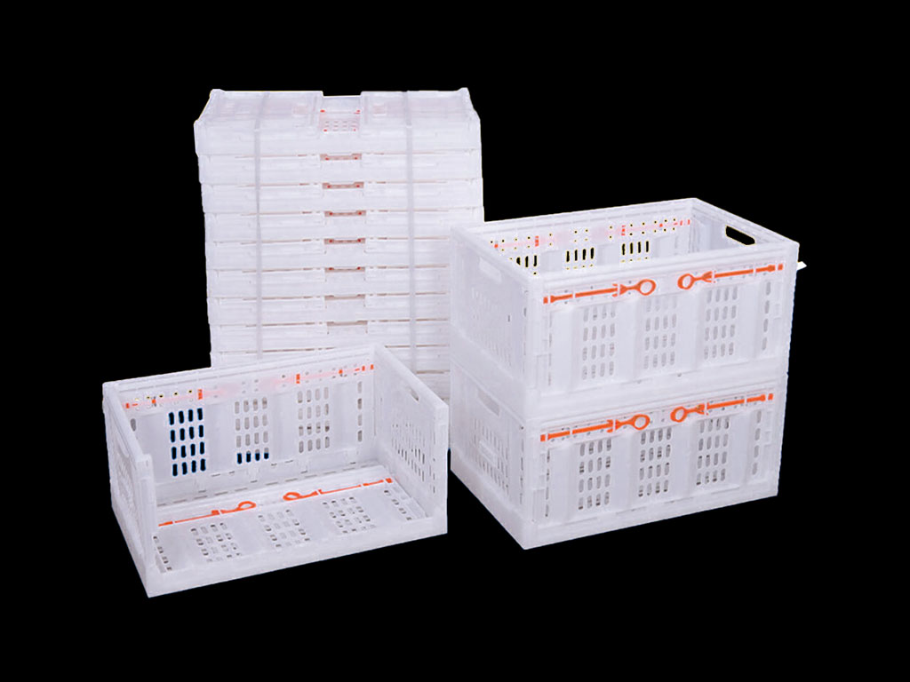
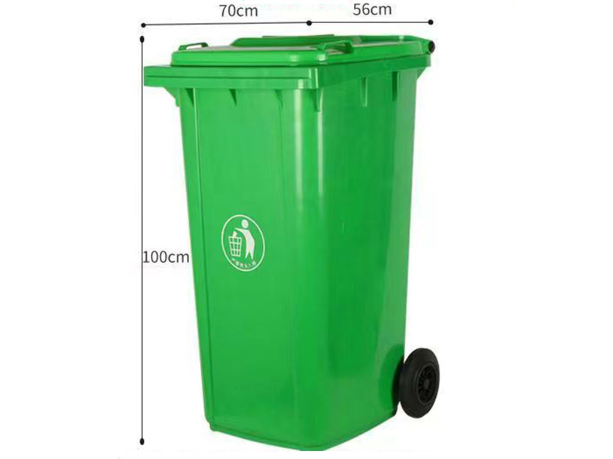

Primary family
Plastic pallets
Compare footprint, deck, base, entries, storage support and operating environment before choosing a series.
Product system
Start with the unit load, handling method and storage interface. Then compare structures inside the relevant product family.
Four families remain available. The first three carry the main selection journey; waste and sanitation stays visible as a secondary route.
Compare footprint, deck, base, entries, storage support and operating environment before choosing a series.

Use a contained unit load when loose parts, produce or work-in-process need side protection, stacking or fold-down return volume.

Smaller reusable formats for parts handling, picking, cooling, drying, agriculture and line-side movement.

Mobile waste-bin formats remain discoverable without competing with the core industrial load-carrier route.
This matrix is a routing aid. It is not a product guarantee or an automated recommendation.
| Decision | Plastic pallets | Pallet boxes | Crates & totes | Waste bins |
|---|---|---|---|---|
| Load form | Wrapped, boxed, bagged or supported unit load | Loose or contained bulk unit load | Small parts, produce or process units | Collection and mobile containment |
| Primary interface | Forks, racks, conveyors, floor stacks | Forks, stacking, tipping or discharge | Manual handling, carts, lines, stacks | Manual movement and collection hardware |
| Key comparison | Base, deck, entries, support, environment | Walls, base, volume, fold ratio, discharge | Footprint, ventilation, nesting, stacking | Volume, wheels, lid and route |